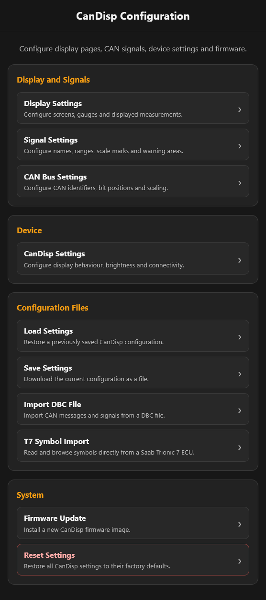

CanDisp 52
Documentation
Getting started
This page covers basic setup and first use. Read the operating manual on the Downloads page before putting CanDisp into service.
Power supply
Connect the black wire from CanDisp to ground (GND) and the red wire to a switched DC power supply.
A supply that switches on and off with the vehicle or the connected system is recommended.
Technical specifications
- Supply voltage: 8 to 15 V DC
- Typical power consumption: 0.8 W
- Maximum power consumption: 3 W
- Recommended external fuse: 5 A maximum
CanDisp starts automatically when you switch on the power supply.
Operating outside the specified voltage range can damage the device.
CAN bus connection
Connect the white wire from CanDisp to CAN Low (CAN_L) and the green wire to CAN High (CAN_H).
In listen-only mode, CanDisp receives CAN messages passively and leaves the operation of existing control units undisturbed.
CAN settings
- Set the CAN bus bit rate in the web interface.
- CanDisp supports standard and extended CAN identifiers.
- The internal 120-ohm split termination can be enabled when needed.
Configuration
CanDisp provides its own Wi-Fi access point for configuration.
Connect to the device's Wi-Fi network, then open its configuration interface in your web browser.
The web interface lets you configure or manage:
- CAN bus bit rate
- Signal definitions
- Display and screen layout settings
- Display brightness
- DBC import
- Firmware updates
See the operating manual for more details.

Navigation
CanDisp displays turn-by-turn directions sent by the CanDispNav Android app over Bluetooth Low Energy (BLE).
The app reads directions from Google Maps and sends the turn arrow, street names, and distance to the next turn to CanDisp.
Open CanDispNav on Google Play
See the operating manual for more details.
Firmware updates
Use the device's built-in web interface to update its firmware.
Find the latest firmware on the Downloads page.
Safety information
Use the device only in suitable low-voltage systems and CAN bus networks.
Switch off the power supply before wiring the device.